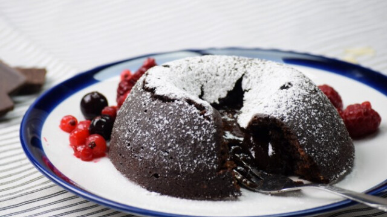

Csokoládés lávasüti mandulával

Hozzávalók:
- 15 dkg étcsokoládé
- 12 dkg vaj (+ a formák kikenéséhez )
- 2 db tojás
- 2 db tojássárgája
- 75 g cukor
- 1 csipet só
- 60 g finomliszt
- 40 g mandula
- 1 ek cukrozatlan kakaópor (+ a formák kikenéséhez )
Elkészítés:
- Az étcsokoládét és a vajat vízgőz felett megolvasztjuk. Ha már teljesen simára kevertük,
félretesszük, és hagyjuk szobahőmérsékletűre hűlni.
- A tojásokat a sárgákkal, a cukorral, valamint egy csipet sóval felhabosítjuk, amíg
világossárga lesz. Ekkor a lehűtött csokoládéhoz öntjük, és óvatosan összeforgatjuk.
- Hozzáadjuk a lisztet, a darált mandulát, illetve a kakaóport, és az egészet
összekeverjük.
- Két 7-8 cm magas kerámiatálkát (vagy 3 szufléformát) kivajazunk, és kakaóporral
beszórjuk. Belekanalazzuk a tésztát úgy, hogy a forma nagyjából 2/3-áig érjen,
és 185°C-ra előmelegített sütőbe tesszük 10-11 percre.
- Porcukorral megszórva és erdei gyümölcsökkel tálalva, még melegen fogyasztjuk,
hogy ne dermedjen meg a sütemény belseje.